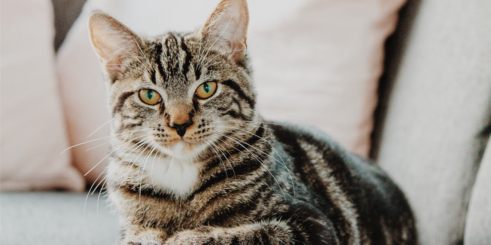

Types Of Cats
Domestic Cat

https://namingcat.com/hebrew-cat-names/
They are so popular that you can see them everywhere: trees, households, or even on the streets!
Appearance:
- They have many shape and colors, short and long fur. The color is ranging from black, grey, white, orange, brown, etc..
Personality
- They are friendly, love to interact with humans.
- They are innate hunters, independent creatures that love hunting rats and stealing fresh fishes from the local market.
Turkish Van Cat

The Turkish Van is a large, muscular cat with a distinctive semi-long coat.
Appearance:
- Its most notable feature is the unique color pattern, often described as “Van pattern,” where the body is predominantly white with colored markings on the head and tail. The colors can vary widely, including orange, cream, black, and blue.
- The Turkish Van also has large, expressive eyes that can be blue, amber, or even odd-colored (one blue, one amber).
Personality
- Turkish Vans are known for their affectionate and playful nature.
- They are highly active and enjoy engaging with their human companions, making them great family pets.
Fun Facts:
- They are sometimes called “swimming cats” because of their unique fondness for water.
- This breed is ancient, originating in the Lake Van region of Turkey.
- They are very intelligent and curious, often finding ways to entertain themselves or even learn simple tricks.